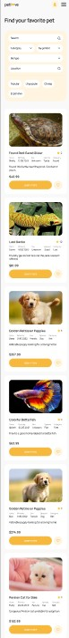
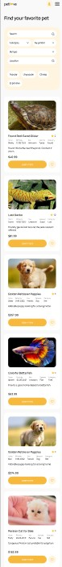
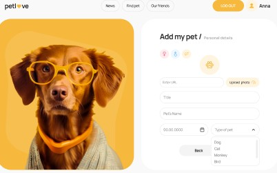
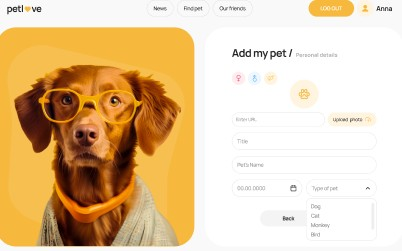

Výzkumné poznatky a inspirace
Podle studie Pet Care Industry Trends z roku 2023 vlastní více než 67 % domácností v USA domácí mazlíčky a poptávka po důvěryhodných informacích a službách roste. Globální trh s péčí o mazlíčky by měl do roku dosáhnout 325 miliard dolarů do roku 2028, což ukazuje potřebu efektivních platforem.
Sociální média zaznamenávají vzestup komunit zaměřených na mazlíčky, ale chybí jim struktura a ověřené zdroje.
Inspirace:
- Dodo – Pro emocionálně poutavé záchranné příběhy.
- Petfinder – Skvělá platforma pro seznamy k adopci.
- GoodRx Pets – Spolehlivý zdroj léků a tipů pro mazlíčky.
- Reddit (r/pets) – Zobrazuje skutečné starosti majitelů mazlíčků: pomoc s chováním, veterinární náklady, výživa atd.


 

 
